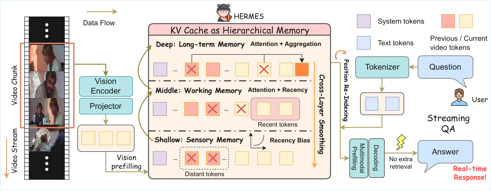

论文信息
| 作者 | Haowei Zhang、Shudong Yang、Jinlan Fu、See-Kiong Ng、Xipeng Qiu |
|---|---|
| 年份 | 2026（预印本） |
| 任务 | 在持续到来的视频流上做实时问答，同时限制 GPU KV cache 的显存开销。 |
| 一句话 | 把 Transformer 各层的 KV cache 看成职责不同的分层记忆：浅层偏近期感知、深层保存长期锚点，中层折中两者，并用跨层平滑与位置重编号维持可用性。 |
1. 核心摘要
流式 Video-LLM 面临一个矛盾：每一批新视频帧都会增加视觉 token 的 KV cache；若完整保留，显存和 attention 成本随时长线性增长；若只保留最近窗口，模型又会忘记与后续问题相关的早期事件。HERMES 不将所有层视为同一种缓存，而从层间 attention 行为出发，把它们解释为 sensory、working、long-term 三类记忆。
具体而言，浅层以时间邻近性保留最近 token，深层以对伪 query 的 attention 选择长期锚点，中层插值融合两类分数；随后由 cross-layer memory smoothing 对相邻层的保留分数做一致性约束，并把被逐出的长期信息聚合为 summary token。论文报告，在 LLaVA-OneVision-7B 的 StreamingBench 上，4K-token HERMES 达到 73.23%，高于 64-frame offline baseline 的 71.34%；在 OVO-Bench 平均分为 58.27%，也高于该 baseline 的 53.35%。
2. 研究动机
流式视频不是一次性长上下文
离线长视频理解可以先完整编码视频，再为已知问题选择压缩或检索策略；流式场景中的未来帧和未来问题都未知，模型必须一边接收视频、一边维护可回答未来问题的状态。将已有 Video-LLM 直接用于这种设定，会让 cache 持续累积，最终迫使系统在显存、响应速度和历史覆盖之间取舍。
“保留最近”与“保留重要”在不同层的含义不同
论文的机制性观察是：浅层 attention 有强 recency bias，更像接收当前视觉输入的感知缓冲；深层 attention 稀疏，少数 token 会在许多帧后仍作为语义锚点被关注；中间层则由前两者逐步过渡。因此，给每一层同一种 eviction 规则既浪费近层容量，也会破坏深层的长期语义证据。
压缩还会引入跨层和位置问题
如果各层独立淘汰 token，同一时刻的信息可能在某层仍存在、在另一层已消失，造成跨层表征失配。另一方面，流式输入不断推进位置索引，最终会超出模型可稳定处理的 RoPE 范围。HERMES 因而不只做 token eviction，还专门处理跨层一致性和位置重新映射。
3. 方法论

原论文 Figure 1。视频 chunk 经视觉编码和投影后写入不同层级的 KV memory；浅层、中层和深层采用不同保留策略，随后以跨层平滑和位置重编号支持实时问答。
3.1 整体流程：将缓存显式分为三类记忆
每个到达的视频 chunk 先经过 vision encoder 与 projector，作为视觉 token prefill 到 MLLM。HERMES 不改变基础 MLLM 的权重，也不额外训练 memory module；它在每层 cache 维护固定预算的 token 集合。浅层承担最近视觉的 sensory memory，中层承担正在整合的 working memory，深层承担可在较长时间后被查询的 long-term memory。用户问题到达时，模型直接复用这一紧凑 cache 回答，而不需要再执行外部检索或将完整历史回载。
3.2 分层 KV 重要性：同一 token 在不同层的保留理由不同
对层 l 的第 i 个视觉 token，浅层用指数遗忘建模时间距离：Sᶩᵢ = αᶩᵢ · exp(−kΔtᵢ)，其中 Δtᵢ = T−1−i。这会优先保留近期 token，符合浅层的感知性角色。深层使用 token 对 query 的 attention 权重 Wᶩᵢ：Sᶩᵢ = αᶩᵢ · Wᶩᵢ。由于真实用户 query 在流式处理时还未知，论文使用 generic guidance prompt 作为 pseudo query 来得到稳定的语义重要性。
中层既不能只追新，也不应完全依赖 query attention，因此采用层深相关的插值：Sᶩᵢ = (1−ωᶩ)Aᶩᵢ + ωᶩRᶩᵢ。其中 A 是归一化 attention，R 是 recency score；随着层加深，ωᶩ 逐步降低，表示中层从近期偏好过渡到语义偏好。这个设计比统一 Top-K 更重要的一点是：它保留了不同 layer 需要不同时间尺度记忆的假设。
3.3 Cross-Layer Memory Smoothing 与 summary token
独立计算每层重要性会使同一物理位置的 token 在层间出现断裂。HERMES 从深层向浅层传递分数，以 Ṡᶩᵢ = (1−λᶩ)Sᶩᵢ + λᶩSˡ⁺¹ᵢ 做平滑，然后用 TopK(Ṡᶩ, |M|) 固定每层 memory budget。这样，深层判断为长期重要的证据会影响邻近浅层的保留决策。
被驱逐 token 并非简单丢弃。论文将其按层聚合为一个 summary token，继续留在 cache 中，提供远期信息的紧凑痕迹。对事件记忆而言，这很像“已发生事件不保留所有帧，却保留可被未来 query 激活的摘要状态”；但 HERMES 的 summary 仍是模型内部表征，不等价于可解释的事件卡片。
3.4 Position Re-Indexing：维持无限流的 RoPE 可用范围
当视频持续输入，token position 会不断增大，超出模型训练时的位置区间，进而损害生成质量。HERMES 将缓存中保留 token 的位置映射回连续区间 [0, |M|)。lazy re-indexing 仅在位置接近模型上限时触发，减少重编号开销并尽可能保留近期 token 的原始位置；eager re-indexing 则在每次压缩后执行，位置更规整但开销更高。论文将前者定位为更适合流式视频，后者更适合离线长视频。
3.5 对 VLA 历史关键事件的对应关系
HERMES 提供的是 cache 管理原则而非事件检测器。可以把 motion + appearance + robot state 确认的关键事件视作深层 anchor 的额外先验：近期控制需要的图像细节留在浅层，当前子任务的交互进展留在中层，确认过的 grasp/place/open 等事件摘要提高其在深层的存活概率。这样“事件是否重要”与“哪一层应保存它多久”成为两个可分离、可共同学习的问题。
4. 实验与结果
设置。论文以 LLaVA-OneVision、Qwen2.5-VL、Qwen3-VL 等作为基础 MLLM，在 StreamingBench、OVO-Bench、RVS-Ego/RVS-Movie 以及 MVBench、EgoSchema、VideoMME 等离线基准评测。HERMES 是 training-free 插件；比较对象包含 ReKV、LiveVLM、StreamMem、InfiniPot-V 和 StreamingTOM。结果须在相同 backbone、采样帧率及 token budget 下比较。
| 原文表格中的对比 | 对照 | HERMES | 解读 |
|---|---|---|---|
| LLaVA-OV-7B，StreamingBench（0.5 fps） | 64-frame offline：71.34 | 4K tokens：73.23 | 固定 cache 并未必然牺牲实时理解，分层保留可超过该离线配置。 |
| LLaVA-OV-7B，OVO-Bench 平均 | 64-frame offline：53.35 | 4K tokens：58.27 | 同时覆盖实时感知和 backward tracing 的平均分提高。 |
| Qwen2.5-VL-7B，StreamingBench（1 fps） | 73.31 | 4K tokens：79.44 | 方法并非只适配一种视觉语言 backbone。 |
| RVS，chunk size 8，16→512 frames | 显存随帧数常增长 | GPU memory 约 16.54→16.66 GB；TTFT 27.01→28.41 ms | 固定预算使峰值显存和首 token 延迟基本稳定。 |
论文摘要还报告：相对 uniform sampling 可减少最多 68% video tokens，在流式数据集上最高得到 11.4% 增益，并相对先前 SOTA 达到 10× TTFT 加速。这些是 VideoQA 指标，不能直接推出机器人动作质量；VLA 仍需评估控制频率、事件召回和错误记忆造成的恢复代价。
5. 优势与局限
| 优势 | 局限与迁移注意点 |
|---|---|
|
|
6. 总结
HERMES 的核心贡献是把 KV cache 从“所有层同规则的工程缓存”重新定义成“跨层职责不同的记忆系统”。浅层存近期、中层调和新旧、深层留语义锚点；跨层平滑和 summary token 则避免压缩后信息碎裂。对 VLA 历史记忆，最值得复用的不是原样使用 pseudo query，而是将关键事件的重要性作为深层长期保留的额外依据，并让近期观测、当前 phase 与长期事件各有不同的 KV 预算。